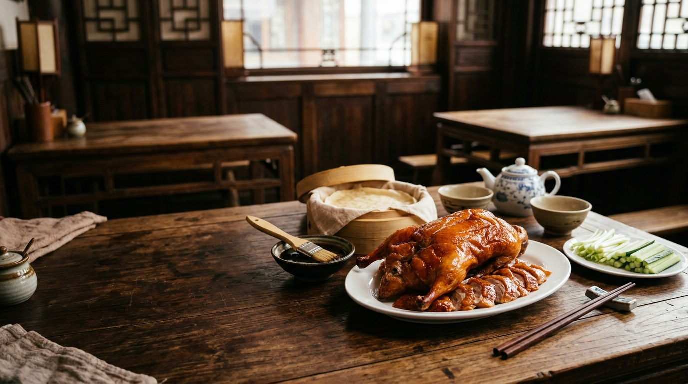
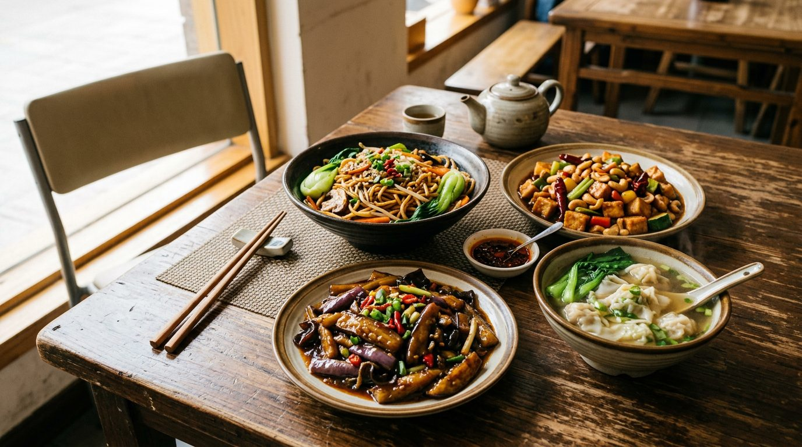

Cocina china en Valencia
Pato Beikin
Pato pekín, carta vegana completa y trato familiar, a 3 minutos de la Estación del Norte.
Pato pekín, la especialidad de la casa
Tres razones para venir.
El pato pekín
La especialidad de la casa, el plato que más mencionan los clientes.

Carta vegana y vegetariana aparte
Una de las más amplias de Valencia en cocina china.
Rápido, generoso y barato
Raciones abundantes, unos 10 € por persona, menú diario entre semana.
Los platos que más piden.
Pato y carnes
- Pato pekín
- Pato a la naranja
- Pollo Kung Pao (Kun Bao) con anacardos
- Ternera con pimiento verde
- Pollo al curry
Tallarines, verduras y más
- Tallarines a la plancha
- Berenjena salteada
- Wan tun
- Tiras de carne estilo Yu Xiang con tallarines
Carta completa en el local. También comida para llevar.
Lo que dicen los clientes.
“Authentic Chinese cuisine and highly recommend that Roast Duck!!”
Reseña en Google
“Owners are the best host, quality food, good price.”
Reseña en Google
“Very small restaurant but good food and friendly asian service.”
Reseña en Google
Abierto todos los días menos el miércoles.
| Día | Comidas | Cenas |
|---|---|---|
| Lunes | 12:00–16:30 | 19:00–22:30 |
| Martes | 12:00–16:30 | 19:00–22:30 |
| Miércoles | Cerrado | Cerrado |
| Jueves | 12:00–16:30 | 19:00–22:30 |
| Viernes | 12:00–16:30 | 19:00–22:30 |
| Sábado | 12:00–16:30 | 19:30–23:30 |
| Domingo | 12:00–16:30 | 19:00–22:30 |
A un paso de la Estación del Norte.
Dirección: Carrer del Matemàtic Marzal, 17, Extramurs, 46007 València.
Cerca de la parada de bus Xàtiva – Institut Lluís Vives y de la Estación del Norte.